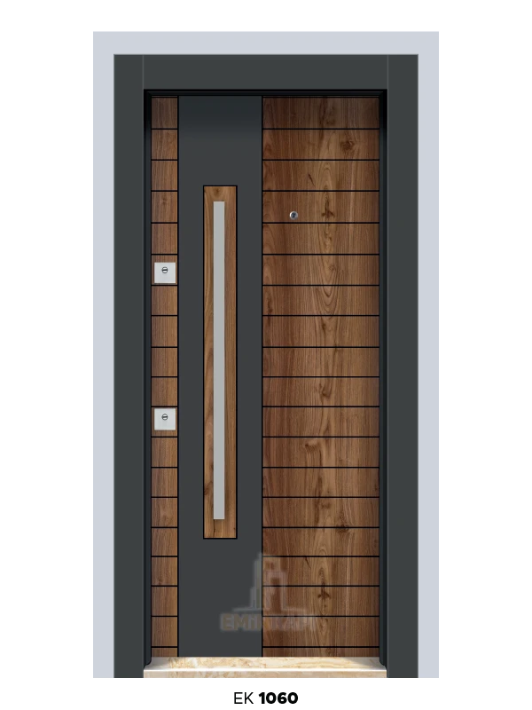

Yerinde ölçü
Fabrika ekibi kapı boşluğunuzu bizzat ölçtüğü için, hazır ölçülü üründe yaşanan "birkaç santim fazla/eksik" sorunuyla karşılaşmazsınız.
Osmaniye'de kapı ihtiyacınız için fabrikadan mı, bayiden mi almalısınız? Yerel üretimin size ne kazandırdığını ve fabrika seçerken nelere bakmanız gerektiğini anlatıyoruz.
Genel bakış
Bir kapı fabrikası; kanat, kasa ve pervazı hammaddeden başlayarak kendi atölyesinde üreten, ölçüyü genelde yerinde alan ve montajı da kendi ekibiyle tamamlayan işletmedir. Bu, hazır ölçülü bir ürünü mağazadan satın almaktan farklı bir süreç — çünkü her daire girişi, her oda kapısı boşluğu aynı ölçüde değil.
Osmaniye, bölgedeki inşaat ve yenileme projelerinin merkezlerinden biri olduğu için burada üretim yapan fabrikalar hem şehir içi hem de Adana, Gaziantep, Hatay gibi komşu illere hizmet verebiliyor. Bunun temel nedeni coğrafi konum — Osmaniye, Çukurova ve Güneydoğu bölgelerinin kesişim noktasında.
Avantaj
Fabrika ekibi kapı boşluğunuzu bizzat ölçtüğü için, hazır ölçülü üründe yaşanan "birkaç santim fazla/eksik" sorunuyla karşılaşmazsınız.
Üretim ile montaj aynı işletmede yürüdüğü için sipariş, aracı bir bayiden geçmeden doğrudan üretim hattına düşer.
Ürünü üreten ile monte eden aynı ekip olduğunda, olası bir uyum sorununda kime başvuracağınızı bilirsiniz.
Yerel iklim ve yapı stoku (duvar kalınlığı, kasa tipi gibi) konusunda bölgede yıllardır üretim yapan bir fabrika daha isabetli önerir.
Seçim rehberi
Ürün çeşitliliği: Bazı fabrikalar sadece çelik kapı, bazıları sadece iç kapı üretir. İhtiyacınız ilerleyen süreçte değişebilir (örneğin sadece oda kapısı ile başlayıp sonradan mutfak dolabı veya çelik giriş kapısı ihtiyacı doğabilir) — tek noktadan hizmet alabileceğiniz bir fabrika bu açıdan avantajlı.
Ölçüye özel üretim: Standart ölçü dışında bir boşluğunuz varsa, fabrikanın özel ölçü üretim yapıp yapmadığını sorun.
Garanti kapsamı: Malzeme ve işçilik hatalarını kapsayan net bir garanti politikası olup olmadığını kontrol edin.
Fabrika + showroom bir arada mı: Ürünü aynı adreste hem üretim hem sergi alanında görebilmek, karar vermenizi kolaylaştırır.
Ücretsiz keşif: Sabit liste fiyatı yerine yerinde ölçüm sonrası net teklif veren fabrikalar, sürpriz maliyetle karşılaşma riskinizi azaltır.

Emin Kapı Osmaniye Fabrikası
Fabrikamız ve showroom'umuz Osmaniye'de, Adnan Menderes Mah. Trafo Cd. No: 6/A adresinde aynı çatı altında. Amerikan panel, melamin, kompozit ve lake iç kapılardan çelik güvenlik kapılarına, PVC kapı-pencere sistemlerinden ölçüye özel mutfak dolabı ve gardırop imalatına, AGT laminant parke döşemesine kadar tek noktadan üretim yapıyoruz.
Osmaniye merkezin yanı sıra Adana, Gaziantep, Hatay, İskenderun, Adıyaman, Kahramanmaraş ve Şanlıurfa'ya da düzenli teslimat ve montaj yapıyoruz. Ölçü ve keşif her zaman ücretsiz; fabrika her gün 09:00–17:00 açık.
Ücretsiz keşif talep edinSık sorulanlar
Fabrikadan aldığınızda ölçünüz, üretiminiz ve montajınız aynı işletme içinde yönetilir — aracı katman olmadığı için hem fiyat hem teslim süresi genelde daha nettir. Bayi üzerinden alımda ise sipariş üretici fabrikaya iletilir, süreç bir adım uzar.
Ürün çeşitliliği (iç kapı, çelik kapı gibi tek bir kategoriyle mi sınırlı), ölçüye özel üretim yapıp yapmadığı, garanti kapsamı, fabrika ve showroom'un aynı yerde olup olmadığı ve ücretsiz keşif sunup sunmadığı en pratik kriterler.
Çoğu Osmaniye kapı fabrikası, bölgesel konumu sayesinde Adana, Gaziantep, Hatay, İskenderun, Adıyaman, Kahramanmaraş ve Şanlıurfa'ya da teslimat ve montaj yapabiliyor. Biz de bu illere düzenli hizmet veriyoruz.
Ciddi üreticilerde evet — çünkü kapı ve doğrama fiyatı ölçüye, sisteme ve modele göre değiştiği için sabit liste fiyatı yerine yerinde ölçüm sonrası net teklif verilmesi gerekiyor.